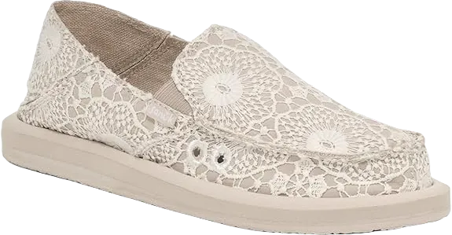
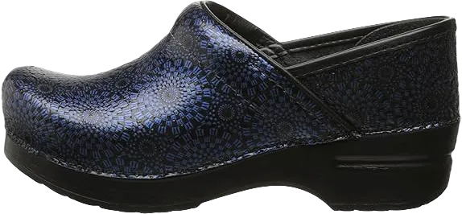

10 Best Shoes for Hairdressers 2024
Being a hairdresser is an enjoyable job, isn’t it? We certainly think so! However, alongside the fun, this profession comes with significant responsibilities. Hairdressers face a demanding workload, as they often spend nearly the entire day on their feet, performing a variety of tasks. They must also navigate the salon with agility while ensuring their clients receive the best possible hair care. This clearly necessitates a great pair of shoes that not only provide comfort but also allow for easy movement throughout their busy day.
The footwear for hairdressers should be equipped with essential features that cater to their unique needs. Comfort, flexibility, and support are key attributes that enable hairdressers to work efficiently and effectively, making the right pair of shoes crucial for their daily routines.
-
#1
Sanuk Women’s Donna Crochet Loafer Flat
At the top of the list is this fantastic pair of shoes designed specifically for women hair stylists. Not only do they provide maximum comfort and flexibility, but they also ensure the wearer looks stylish and trendy.
Design of the Shoe: This shoe features a simple slip-on design, making it easy to put on and take off during break hours, allowing hairdressers to transition effortlessly between tasks.
Outsole and Sole: The outsole is crafted from U rubber sponge combined with 100% fabric, creating a durable option for running around the salon while offering softness and flexibility for movement. The rubber sole provides excellent grip on the floor, enhancing safety and stability. Additionally, the shoe includes a premium EVA footbed that is molded for comfort, complete with an antimicrobial additive to keep feet clean and odor-free. The soft canvas lining ensures comfort during long hours of work, making these shoes a top choice for hairdressers. If you’re in the profession, you’ll appreciate the following standout features of this pair. -
#2
Vans Unisex Classic Slip-on Black
.webp)
This pair of shoes is designed for both genders and is an excellent choice for hairdressers who prioritize style above all else. This slip-on model allows hairdressers to easily put them on and take them off in seconds, making it a convenient option for busy salon environments.
Design of the Shoes: The shoe features a sharp design that adds a stylish touch to the wearer. Its elegant black-on-black color combination enhances its sophisticated appearance. While this model offers several other color options, you can choose one that best reflects your personality and complements your wardrobe.
Upper and Sole of the Shoe: The upper is constructed from durable canvas material, ensuring longevity and resilience. The rubber sole provides excellent grip on the salon floor, enhancing safety during movement. Although this shoe is a great option for hair stylists, it’s important to select the correct size, as customer reviews indicate potential sizing issues. -
#3
Dansko Professional Clog
.webp)
Another fantastic option for women hair stylists, this shoe adds a stylish touch to any outfit while providing essential support and comfort.
Design of the Shoe: This shoe features a cushy design that maximizes comfort for the wearer. Crafted from pure leather, it is available in ten different styles, ensuring that every stylist can find a pair that suits their taste. The leather not only enhances the shoe's durability but also provides flexibility for easy movement throughout the day.
Sole and Footbed: The sole is made of rubber, offering excellent grip on salon floors and ensuring slip resistance, similar to other professional footwear. Additionally, the footbed is designed to absorb shocks, helping to prevent injuries during work. Made from Custom Orthotics, this footbed is removable, allowing for customization if needed. This shoe is an ideal choice for hairdressers seeking style, grip, and comfort all in one. -
#4
CLARKS Women’s Leisa Sadie Clog
.webp)
This professional pair of shoes for women hair stylists comes from Clarks, offering a blend of style and functionality.
Design of the Shoe: Featuring a classic mule design, this shoe is made from 100% pure leather, which enhances its attractiveness and durability. The slide-on design makes it a convenient choice for busy stylists looking for a hassle-free option.
Sole and Footbed of the Shoe: The sole is constructed from rubber, providing excellent grip on salon floors, making it an ideal choice for hairstyling environments. Inside, the shoe is well-cushioned to ensure maximum comfort for the wearer during long hours of work. It incorporates a high-quality Ortholite footbed for additional support. Before purchasing, it's essential to check the sizing, as many women report issues with size accuracy and fit. -
#5
Skechers Performance Go Walk 3 Slip-On
.webp)
This slip-on shoe is a top contender on our list, perfect for hairstylists who will appreciate its thoughtful design and comfort. The easy-to-wear slip-on style allows for quick changes during busy salon hours. Made from lightweight Fit Knit mesh material, these shoes enable effortless movement around the salon while ensuring breathability, even in the hot summer months.
Sole of the Shoe: Crafted with a rubber sole, this shoe enhances stability on various surfaces and improves the gait of the wearer, reducing the risk of slips and falls.
Midsole of the Shoe: Featuring a memory foam midsole, these shoes provide excellent cushioning, protecting both the toes and heels during long hours of standing. The innovative Goga Pillars technology in the midsole further enhances flexibility, making these shoes an excellent choice for hairdressers who need to stay comfortable and stylish, even in extreme heat. -
#6
Dansko Women’s Professional Mule
Next up is the Dansko Women’s Professional Mule, a fantastic choice for hairstylists seeking comfort and style. This handmade shoe not only delivers a polished look but also ensures high-quality craftsmanship. Featuring a sleek slip-on design, it allows for easy foot entry, while the upper is constructed from 100% pure leather, providing excellent arch support for enhanced comfort.
Midsole of the Shoe: The midsole is where you’ll find exceptional comfort, making it ideal for long hours on your feet. Designed for full-time support while standing, it effectively absorbs shocks, protecting your feet from impact throughout the day.
Sole of the Shoe: Constructed from rubber, the sole offers excellent grip on salon floors, ensuring stability during busy shifts. While this professional shoe is a top choice for hairstylists, it comes with a higher price tag. Therefore, if you're on a budget, it's important to consider your options to avoid any discomfort from overspending. -
#7
Alegria Women’s Paloma Flat
.webp)
This shoe is a premium investment designed specifically for women in the hair styling profession. If you have the financial means, it's definitely worth considering; however, if you're on a tighter budget, it may be best to pass. As the saying goes, premium quality often comes with a premium price tag.
Design of the Shoe: Featuring a sleek silhouette and a hook-and-loop closure, this design ensures a secure fit around the ankle. You can choose between leather or mesh materials, both of which enhance breathability and durability. You'll experience no discomfort, even during long hours of movement within the salon.
Outsole and Sole of the Shoe: The outsole is a striking all-white color and is crafted from PU, while the sole is made of synthetic rubber, ensuring a slip-free experience. You won’t have to worry about slipping on the salon floor in front of clients. While this brand offers comfortable work shoes at a higher price point, affluent hairstylists will appreciate the exceptional quality and comfort it provides. -
#8
Crocs Women’s Classic Slip-on Clog
.webp)
You’ll be pleasantly surprised to learn that this shoe from the renowned brand Crocs is a favorite among nurses, and it has gained similar popularity among hairdressers. Given that nurses endure long hours and are constantly on the move, it's no wonder this shoe is also a go-to for hairstylists. Its slip-on design and exceptional comfort are key reasons for its acclaim, all at an affordable price.
Design of the Shoe: Featuring a convenient slip-on style with a heel strap, this shoe makes it easy for busy hairdressers to quickly slip them on and off during lunch breaks or rest periods. If you're a stylish woman, you’ll appreciate this brand, which prioritizes comfort throughout your working hours. Plus, it’s lightweight for added ease.
Outsole and Sole of the Shoe: The outsole is crafted from Crocs Croslite material, enhancing the overall comfort for the wearer. The sole, made from rubber like other professional footwear, allows for maximum movement and grip within the salon. This is the most budget-friendly option on the list, making it ideal for those with limited funds. Remember, while it may not be the most stylish choice, it provides outstanding comfort for long work hours. -
#9
Skechers Women’s Flex Appeal 2.0
.webp)
Another great addition to our list is this comfortable shoe from the renowned brand Skechers, designed specifically for women. You might wonder why so many options are tailored for women in this industry; the answer lies in the fact that a majority of hairstylists and hairdressers are women. This shoe prioritizes comfort and ease of wear, making it an excellent choice for professionals.
Design of the Shoe: Featuring a lace-up closure, this shoe allows you to achieve a perfect fit effortlessly. Crafted from synthetic material in a sleek white color, it offers maximum flexibility, making it ideal for women working long hours in salons.
Upper, Midsole, Insole, and Sole of the Shoe: The upper part is made from knit fabric, which enhances breathability and flexibility, enabling you to wear them comfortably for extended periods. The midsole consists of shock-absorbing materials that protect your feet from impacts, making it a great option if you’re dealing with foot injuries. The insole is equipped with air-cooled memory foam for added cushioning, while the rubber sole ensures optimal grip on the floor. This affordable and comfortable shoe is highly recommended for salon work, providing the support you need throughout the day. -
#10
Crocs Women’s Classic Fuzz Lined Clog Shoe
.webp)
As we approach the final option on our list, this shoe stands out as one of the best choices for hairdressers seeking comfort and functionality. The design features a heel strap that ensures a secure fit around the ankle, making it ideal for busy salon environments. Additionally, the ventilation clogs allow for breathability, keeping your feet cool and comfortable during long hours of work.
Midsole of the Shoe: Crafted from Croslite material, the midsole contributes to the shoe’s lightweight nature while providing excellent cushioning and protection. This feature is particularly beneficial for those who are on their feet all day.
Additional Comfort Features: Moreover, the shoe is designed with synthetic fleece lining, which helps to keep your feet warm during the colder months. This combination of comfort and practicality makes it a top pick for hairdressers.